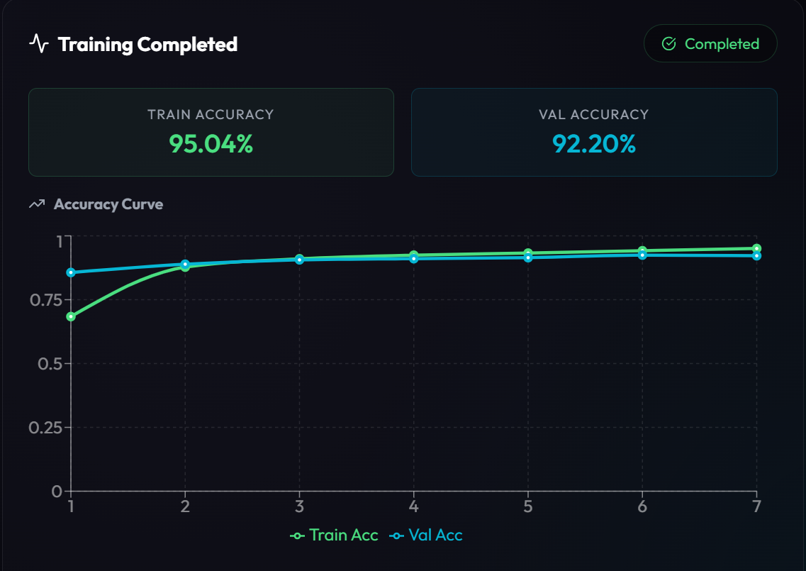
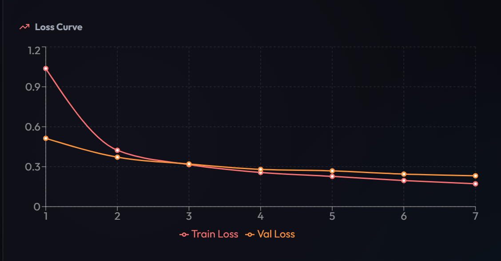
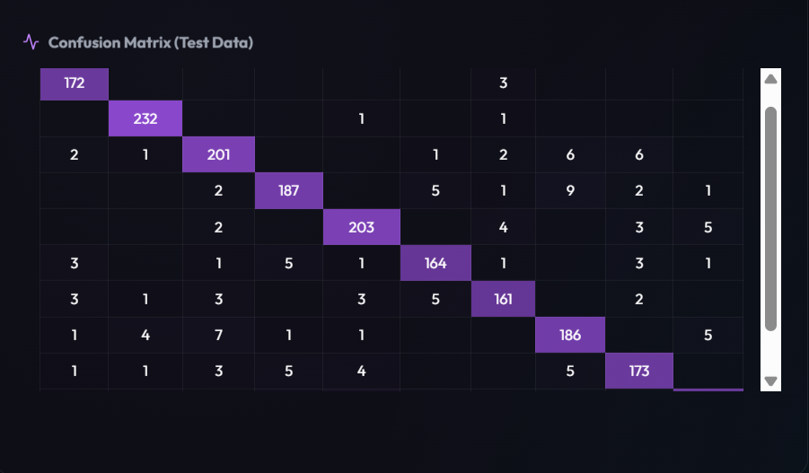

Intelligent Hyperparameter Optimizer
This project presents a hardware-aware system that dynamically optimizes machine learning hyperparameters based on device capabilities, ensuring efficient, stable, and crash-free training.
Problem Statement
Machine learning models rely heavily on hyperparameter tuning to achieve optimal performance. However, traditional approaches use fixed configurations without considering hardware limitations. This leads to inefficient training, slow convergence, and system crashes due to memory constraints. Therefore, an intelligent system is required to dynamically adjust training parameters based on available resources.
Literature Review
Existing hyperparameter optimization methods such as Grid Search, Random Search, and AutoML frameworks primarily focus on maximizing model accuracy. However, these approaches do not consider system hardware constraints and assume access to high-performance computing resources, making them inefficient for practical use.
Research Gap
Current solutions lack a hardware-aware mechanism that dynamically adapts hyperparameters based on system specifications. This results in inefficient resource utilization and unstable training. Addressing this gap is essential to ensure reliable and efficient machine learning workflows.
System Methodology
Dataset / Input
The system supports standard datasets such as MNIST and EMNIST, along with custom datasets uploaded by the user in compressed format. The input data is preprocessed through normalization and reshaping to ensure compatibility with the neural network model. Additionally, dataset characteristics such as number of classes and size are analyzed to assist in hyperparameter selection.
Model / Architecture
A neural network model is implemented using TensorFlow and Keras, consisting of multiple dense layers with activation functions and dropout layers for regularization. The architecture remains consistent, while key hyperparameters such as batch size, learning rate, optimizer type, and number of epochs are dynamically adjusted. The model is trained using supervised learning techniques to achieve high classification accuracy.
Execution & Technology
The backend is developed using FastAPI, which handles dataset processing, hyperparameter optimization, and model training. The frontend is built using React (Next.js) and Tailwind CSS for an interactive and responsive user interface. Real-time training metrics such as accuracy and loss are streamed using WebSockets, allowing users to monitor training progress dynamically. The entire system is containerized using Docker to ensure scalability and easy deployment across different environments.
The system evaluates hardware specifications including RAM, CPU cores, GPU availability, and VRAM. Based on these inputs, a rule-based engine dynamically configures hyperparameters to ensure efficient training and prevent system crashes.
View GitHub Repository
Results & Analysis
Accuracy Curve

Loss Curve

Confusion Matrix

The model demonstrates stable convergence and consistent learning behavior. Accuracy improves steadily while loss decreases smoothly across epochs. The confusion matrix highlights strong classification performance with minimal errors. The system effectively prevents crashes and achieves accuracy between 90% and 96%.
Conclusion
The Intelligent Hyperparameter Optimizer successfully improves training efficiency by adapting hyperparameters based on hardware capabilities. It prevents system crashes, ensures stable convergence, and provides a practical solution for real-world machine learning workflows.
Academic Credits
Project Guide
Dr. Mohit Kushwaha
Student
Manalee Tamrakar
23FE10CSE00507